Darrin Young, DVM
Since 1995 · University of Missouri, 1993
After graduation Dr. Young moved closer to home to help support and provide services for his community, and opened the clinic in 1995.
Fun fact: he enjoys performing surgeries.
Mon – Fri 8:00 am – 5:00 pm · Sat 8:00 am – 12:00 pm
A mixed animal practice serving Chillicothe and the surrounding counties since 1995, now in a new hospital on North Hwy 65 with digital x-ray, ultrasound, a full dental suite and a complete in-house lab.
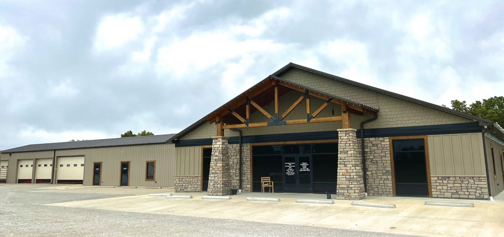
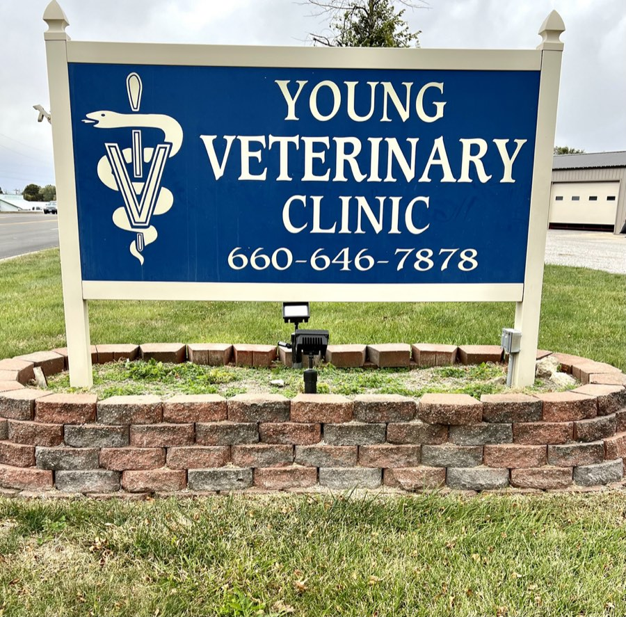
What we do
About three quarters of our work is small animal medicine and a quarter large animal. Both sides have their own equipment, facilities and doctors who love what they do.
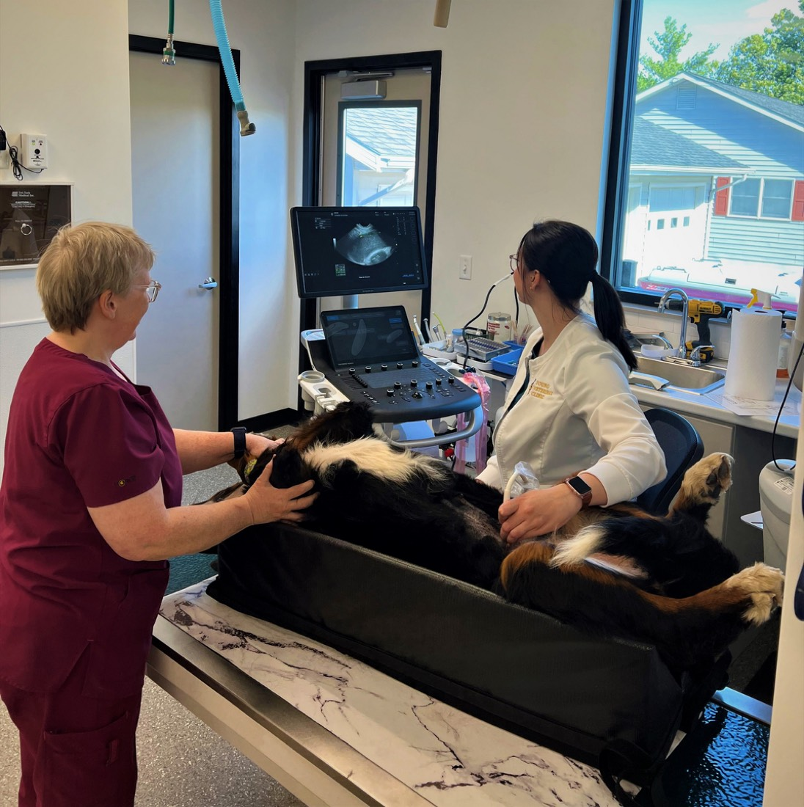
Wellness exams, vaccinations, surgery, dentistry, ophthalmology, allergy treatment and in-house diagnostics.
Small animal services
On-the-farm calls, a large haul-in equine and bovine facility, herd health and reproductive services.
Large animal services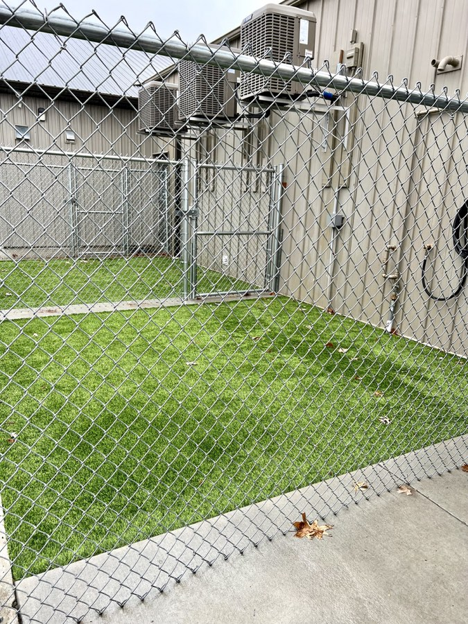
Heated and cooled indoor boarding with a fenced, supervised play area, plus bathing and nail trims.
Boarding detailsAnimal emergency care in North Missouri
Our doctors take emergency calls well into the evening, seven days a week. Call (660) 646-7878 and a doctor will return your call.
Call the emergency lineOur hospital
A large treatment area, surgery prep and surgery suite, digital x-ray, surgical and therapy lasers, a full dental suite, ultrasound and a complete in-house diagnostic lab.
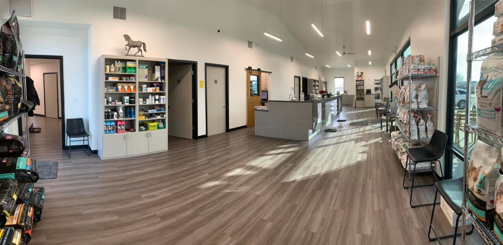
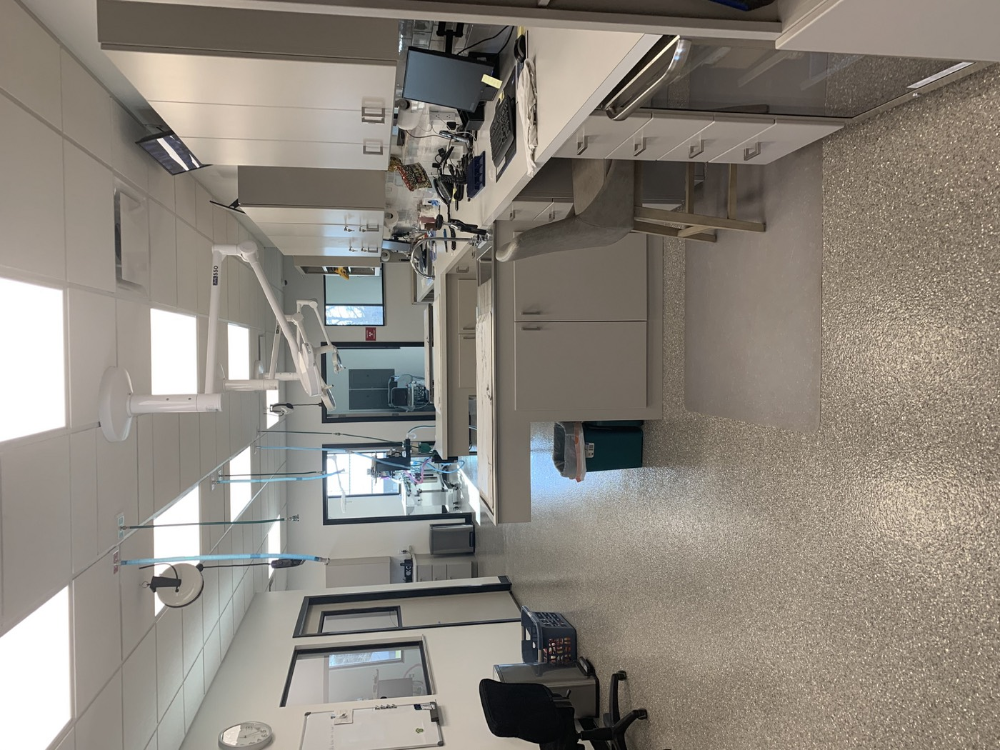
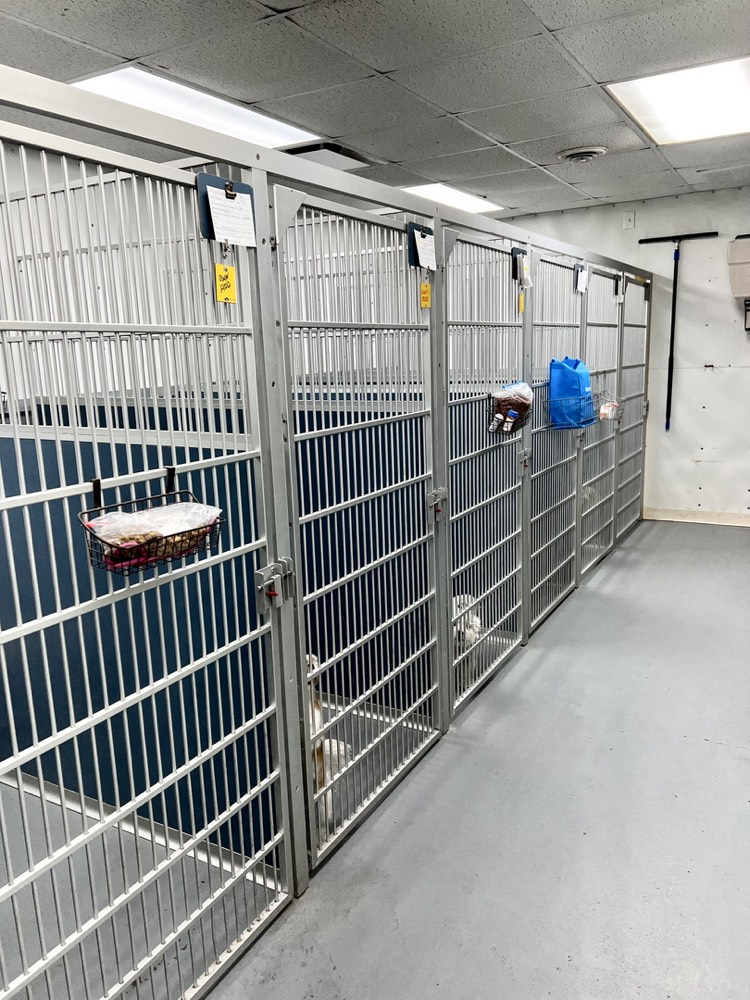

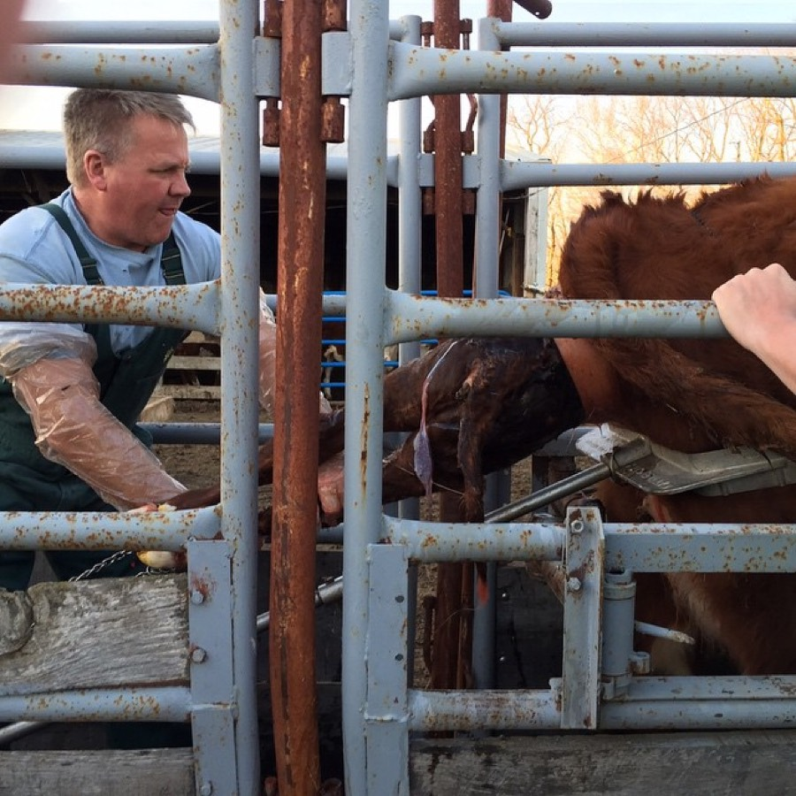
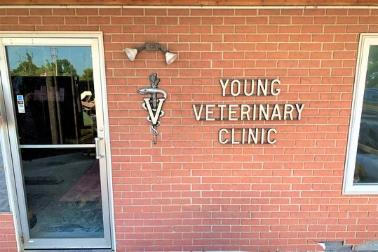
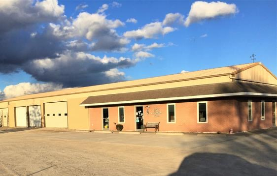
Our backstory
Dr. Darrin Young graduates from the University of Missouri College of Veterinary Medicine and moves closer to home to serve his community.
Young Veterinary Clinic opens on North Hwy 65 as a two exam room clinic.
Dr. Sarah Claytor joins the practice the year she graduates from Mizzou.
Renovation begins to expand our services.
The new clinic opens its doors, built onto the original building.
Our doctors
Since 1995 · University of Missouri, 1993
After graduation Dr. Young moved closer to home to help support and provide services for his community, and opened the clinic in 1995.
Fun fact: he enjoys performing surgeries.
With us since 2016 · University of Missouri, 2016
Originally from south central Illinois, Dr. Claytor was looking for a high quality mixed animal practice. After visiting our clinic, she fell in love with our community and staff.
Fun fact: she enjoys dentistry.
From our clients
“Dr. Young has been our family vets for 20 years. He is a very kind and personable vet who really cares about animals. His entire staff is very friendly. They also genuinely care about the people behind the pet.”
Google review
“Young Veterinary really relate to our pets. They are very caring people. We use their Veterinary and Boarding Services. My fur babies are very comfortable with the staff and they like going there.”
Google review
“Just moved up here from another state. Very caring veterinary. Both my dogs got all caught up on their shots and tests. Clean, friendly, cost efficient and helpful.”
Google review
Good to know
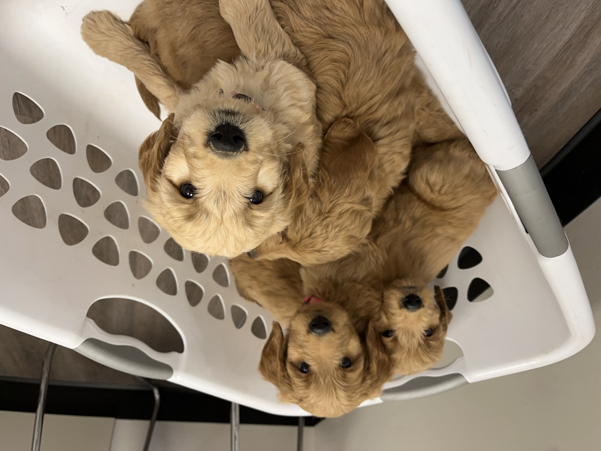
Yes. We are a mixed animal practice. Besides dogs and cats we offer on-the-farm veterinary services, a large haul-in equine and bovine facility with a hydraulic cattle chute and tilt table, equine stocks, herd health and reproductive services.
Emergency services are available Monday to Friday 5:00 pm – 10:00 pm, Saturday 12:00 pm – 10:00 pm and Sunday 7:30 am – 10:00 pm. Call (660) 646-7878 and a doctor will return your call.
Yes. Early drop-off starts at 8 am on weekdays, and we are also open Saturdays from 8 am to 12 pm.
No. Food is provided, but you are welcome to bring your own. Boarders are fed and given fresh water twice daily, let out at various times of the day and get time in our fenced, supervised outdoor play area.
At 3145 N Hwy 65, Chillicothe, MO 64601, just 10 minutes north of the intersection of Highway 36 and Highway 65.
Yes, year-round for 3rd and 4th year students from U.S. accredited schools, with free housing on a first come, first served basis. Externships & careers
Visit us
Send us a few details and we’ll get back to you. For an emergency, please call (660) 646-7878.